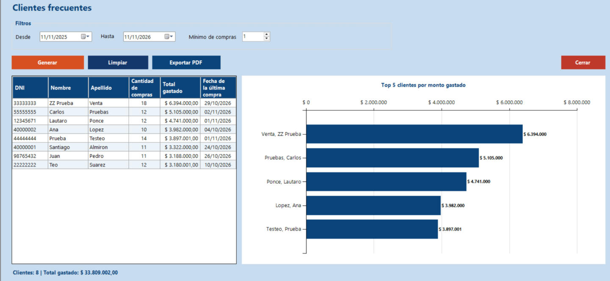

Inicio › Reporte › Clientes frecuentes
Clientes frecuentes
Un ranking de tus mejores clientes en el período que elijas: cuántas compras hicieron, cuánto gastaron y cuándo compraron por última vez. Incluye un gráfico con los cinco que más gastaron y se puede pasar a PDF.
Dónde está: Reporte › Clientes frecuentesLo usa: AdministradorAtajo: F1
Pasá el mouse por encima de cualquier botón o campo de la pantalla para ver qué hace.

Qué hace cada elemento
- 1DesdePrimer día del período. Por defecto propone hace 12 meses.
- 2HastaÚltimo día del período. Por defecto es hoy.
- 3Mínimo de comprasSolo muestra clientes con al menos esta cantidad de compras en el período. Poné un número mayor para ver a los más fieles.
- 4GenerarArma el reporte con los filtros elegidos: llena la tabla y el gráfico.
- 5LimpiarVuelve los filtros a sus valores iniciales y vacía el reporte.
- 6Exportar PDFGuarda el reporte en un PDF con el período, los datos de la tabla y el gráfico. Primero hay que generarlo.
- 7CerrarCierra el reporte y vuelve al menú principal.
- 8Tabla de clientesUna fila por cliente: DNI, nombre, apellido, cantidad de compras, total gastado y fecha de la última compra. Ordenada de mayor a menor gasto.
- 9Gráfico: top 5 por monto gastadoBarras con los cinco clientes que más gastaron, con el monto al final de cada barra.
- 10ResumenCuántos clientes entran en el reporte y cuánto suman en total. Antes de generar dice "Aún no se generó el reporte".
Cómo hacerlo
- Dejá Desde y Hasta como están (último año) o cambialos.
- Poné el Mínimo de compras que quieras exigir (1 muestra a todos los que compraron).
- Tocá Generar.
- Leé la tabla de arriba hacia abajo y mirá el gráfico de los cinco primeros.
- Generá el reporte primero.
- Tocá Exportar PDF.
- Elegí la carpeta y el nombre. Propone ClientesFrecuentes_fecha_hora.pdf.
- Tocá Guardar: el sistema avisa con la ubicación del archivo.
Para saber más
Mensajes que puede mostrar el sistema 7
| Mensaje | Qué significa y qué hacer |
|---|---|
| AvisoLa fecha 'Desde' no puede ser posterior a la fecha 'Hasta'. | Invertiste el período. |
| AvisoEl mínimo de compras debe ser 1 o más. | Poné 1 o un número mayor. |
| AvisoNo hay clientes que cumplan con los filtros elegidos. | Ampliá el período o bajá el mínimo de compras. |
| AvisoPrimero generá el reporte con al menos un cliente para poder exportarlo. | Tocá Generar antes de Exportar PDF. |
| ListoPDF exportado correctamente: (ruta) | El archivo quedó guardado. |
| ErrorError al exportar PDF: (motivo) | Cerrá el archivo si lo tenías abierto o elegí otra carpeta. |
| ErrorNo se pudo generar el reporte. El error quedó registrado en la bitácora. | Avisale al administrador. |
Reglas a tener en cuenta 4
- Solo el Administrador puede ver este reporte.
- El reporte es de consulta: no modifica ningún dato.
- El gráfico siempre muestra los cinco clientes con mayor monto gastado, aunque la tabla tenga más.
- Cada vez que se cambia un filtro hay que volver a tocar Generar.
Temas relacionados
SneakRush · Ayuda del sistema · Clientes frecuentes. Podés abrir esta ayuda desde cualquier pantalla con la tecla F1.